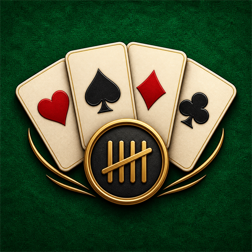

حساب دقيق وفوري
احتساب تلقائي للنقاط والتدبيل والاستثناءات حسب اللعبة.

تطبيق ويب لكل جلسة شدة
سجّل ما حدث على الطاولة، واترك حساب النقاط وسجل الجولات علينا.
مجاني، بلا تسجيل، وقابل للتثبيت على الهاتف
لماذا دفتر النتائج؟
أدوات واضحة وسريعة تساعدكم على إنهاء كل جولة بلا أخطاء أو خلافات.
احتساب تلقائي للنقاط والتدبيل والاستثناءات حسب اللعبة.
تفاصيل كل جولة مع إمكانية التراجع عن آخر نتيجة عند الخطأ.
شارك النتيجة النهائية بسهولة مع اللاعبين بعد انتهاء المباراة.
ثبّته بأيقونته الخاصة وافتحه من الشاشة الرئيسية كتطبيق مستقل.
الألعاب المدعومة
أربع ممالك، خمس جولات، ودعم كامل لتدبيل الشيخ والبنات.
فردي وشراكةجولة عقوبات مجمعة ثم جولة تريكس لكل مملكة.
فردي وشراكةحساب الطلبات والكبّوت مع أهداف 31 أو 41 أو 61 نقطة.
شراكةتسجيل مرن للنقاط الموجبة والسالبة وإنهاء المباراة حسب اتفاقكم.
مرن وسهلالطاولة جاهزة
اختر اللعبة، أدخل أسماء اللاعبين، وابدأ الجولة الأولى.